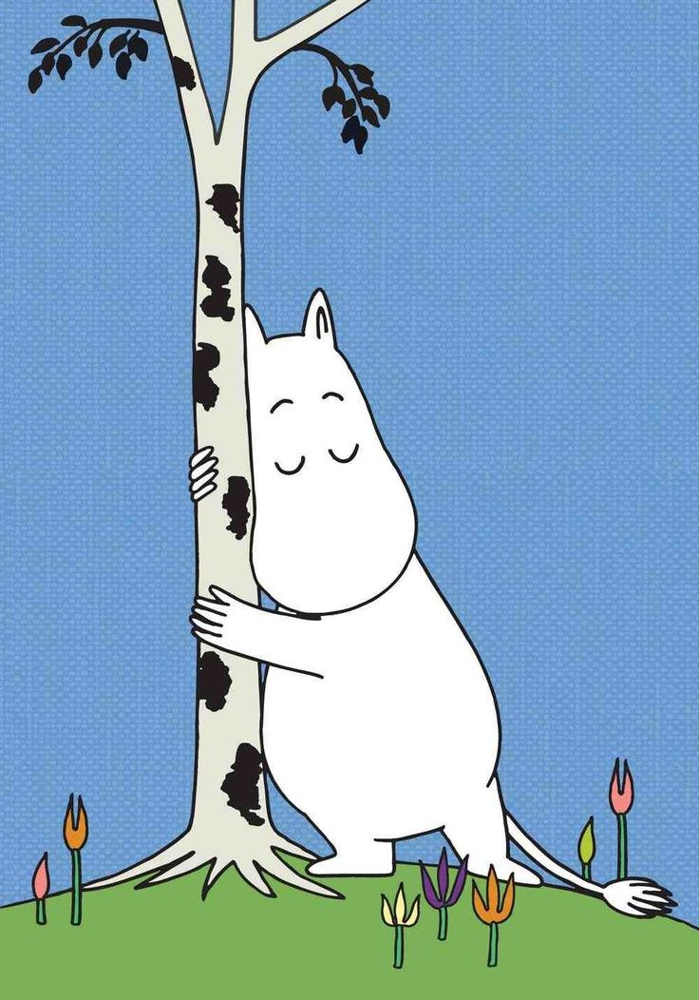
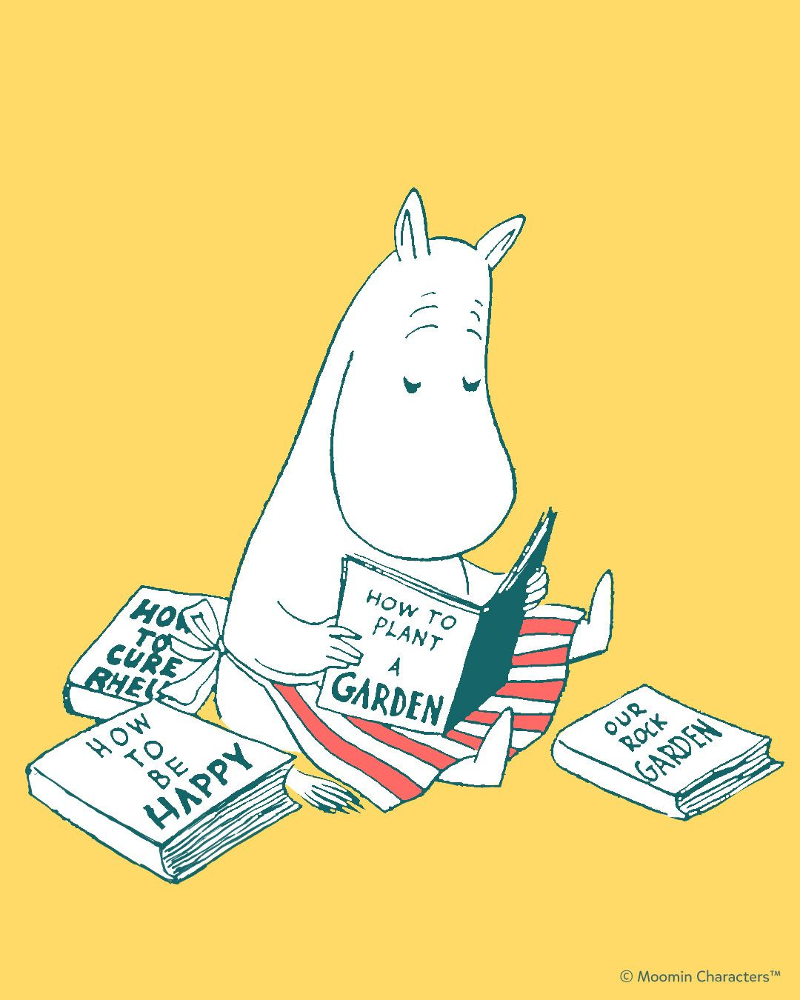
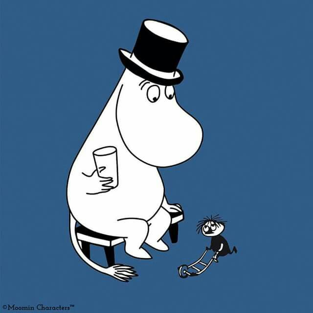
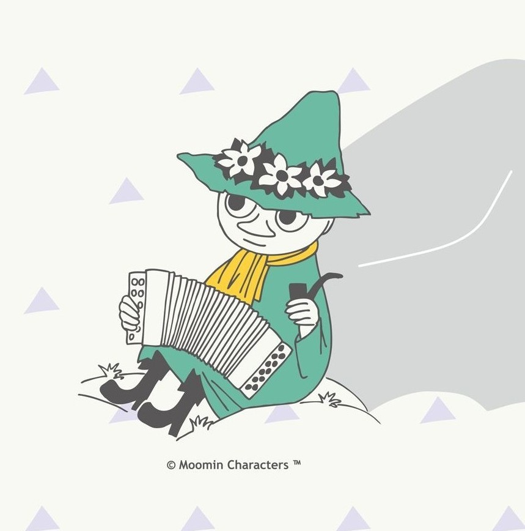

CHARACTERS

Moomintroll ▲
Moomintroll is the protagonist of the series, Moomintroll is a spirited, white troll with a round snout. He is adventurous, curious, and often finds himself in various escapades with his friends. Moomintroll is known for his good-natured personality and his close friendship with Snufkin, Snorkmaiden, and his parents.

Moominmamma ▲
Moominmamma is Moomintroll's nurturing mother, she is calm and resourceful, often carrying a handbag filled with essentials. Moominmamma is supportive and understanding, providing comfort to her family during their adventures. She also often sports a red and white striped apron.

Moominpappa ▲
Moominpappa is the father of Moomintroll, Moominpappa is a somewhat restless character who enjoys storytelling and reminiscing about his youth. He is often seen wearing a black top hat and is determined to be a responsible father.

Snufkin ▲
Snufkin is Moomintroll's best friend, Snufkin is a free-spirited wanderer who loves nature and music. He is known for his wisdom and calm demeanor, often providing guidance to Moomintroll. Snufkin wears old green clothes and a wide-brimmed hat that he has had since birth. He lives in a tent, smokes a pipe, and plays the harmonica.

Snork Maiden ▲
Snork Maiden is Moomintroll's love interest, Snork Maiden is a kind and gentle character who shares a close bond with Moomintroll. She is adventurous and often joins him on his quests. Snorks are almost identical to Moomins except that Snorks have hair on their heads, and their fur changes color depending on their mood.

Little My ▲
Little My is a small, determined, and fiercely independent Mymble. She is very aggressive and totally disrespectful, but can be a good friend. She is Snufkin's elder half-sister and first appeared in The Exploits of Moominpappa, in which her small stature is explained as resulting from arrest of growth.